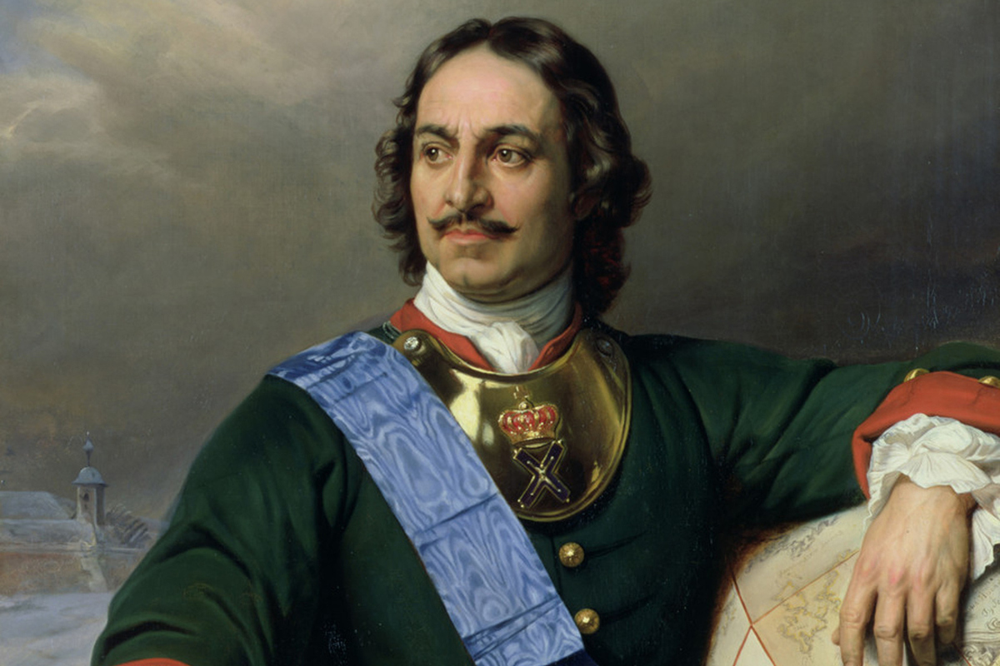
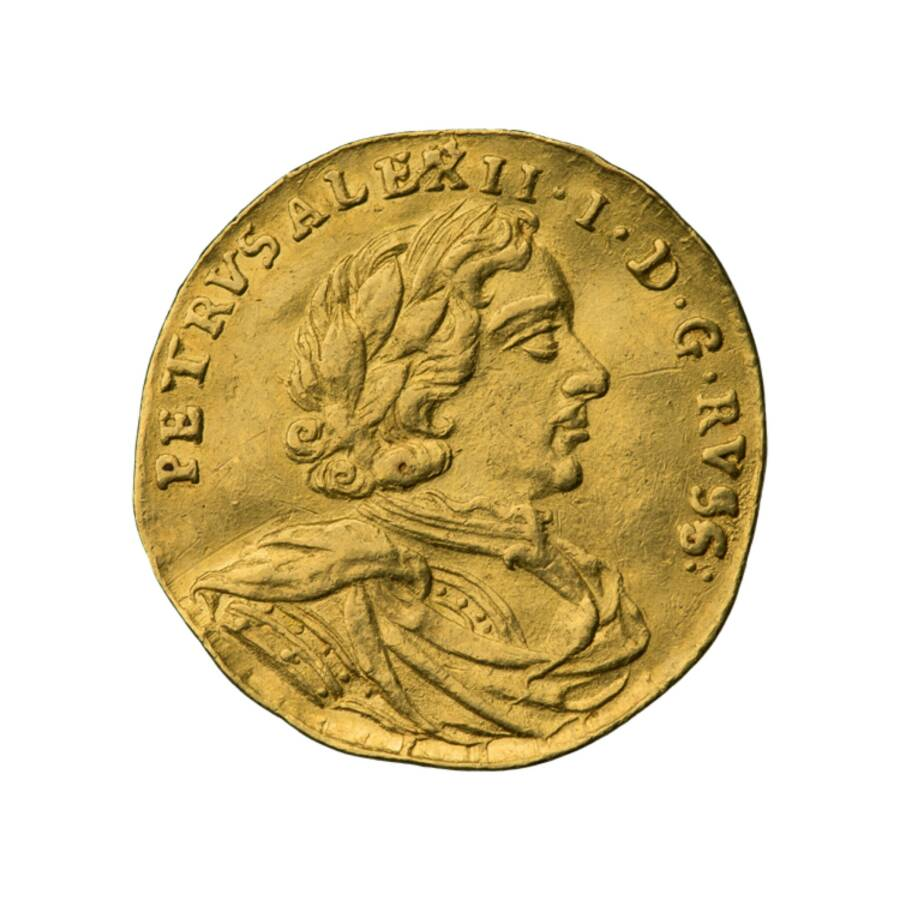

Пётр I Биография
Ранние годы
Детство и юность Петра I
Дата рождения Петра I – 30 мая (9 июня) 1672 года. Петр был старшим сыном царя Алексея Михайловича
от второй жены, Натальи Кирилловны Нарышкиной. Воспитывали наследника престола няньки, а грамоте
обучал не слишком образованный дьяк Никита Зотов. Петр I не получил систематического европейского
образования, поздно освоил грамоту и писал с ошибками. Впрочем, юный царевич всегда отличался тягой
к знаниям и всю жизнь учился новому. Он с удовольствием осваивал ремесла и говорил на нескольких
иностранных языках.
Уже в раннем детстве проявилась у царевича и тяга к военной науке. Для игр Петра был сформирован
«потешный» полк из сверстников будущего императора. Петр со своими соратниками устраивал
показательные сражения, штурмовал крепости и даже завел при своих потешных артиллерию. Постепенно
«игра в солдатики» перешла в настоящее военно-практическое обучение, а в число потешных стали
записываться и взрослые люди. Из детских игр царевича выросла впоследствии знаменитая петровская
армия нового строя, а сами потешные стали ее элитными гвардейскими частями – Преображенским и
Семеновским полками.
Преображенский и Семёновский потешные полки
Всё свободное время Пётр проводил вдали от дворца — в сёлах Воробьёве и Преображенском. С каждым
годом у него увеличивался интерес к военному делу. Пётр одел и вооружил своё «потешное» войско,
состоявшее из сверстников по мальчишеским играм. В 1685 году его «потешные», одетые в иностранные
кафтаны, под барабанный бой полковым строем шли через Москву из Преображенского в село Воробьёво.
Сам Пётр служил барабанщиком.
В 1686 году 14-летний Пётр завёл при своих «потешных» артиллерию. Огнестрельный мастер Фёдор Зоммер
показывал царю гранатное и огнестрельное дело. Из Пушкарского приказа были доставлены 16 пушек. Для
управления тяжёлыми орудиями царь взял из Конюшенного приказа охочих к военному делу взрослых
служителей, которых одели в мундиры иноземного покроя и определили потешными пушкарями. Первым надел
иноземный мундир Сергей Бухвостов. Впоследствии Пётр заказал бронзовый бюст этого первого русского
солдата, как он называл Бухвостова. Потешный полк стал называться Преображенским, по месту своего
расквартирования — селу Преображенское под Москвой.
В подмосковном селе Преображенском, напротив дворца, на берегу Яузы был построен «потешный городок».
При постройке крепости Пётр сам деятельно работал, помогал рубить брёвна, устанавливать пушки. Здесь
же расквартировывался созданный Петром «Всешутейший, Всепьянейший и Сумасброднейший Собор» — пародия
на Католическую Церковь и Православную Церковь. Сама крепость была названа Прешбургом, вероятно, по
имени знаменитой в то время австрийской крепости Пресбург (ныне Братислава — столица Словакии), о
которой он слышал от капитана Зоммера. Тогда же, в 1686 году, появились под Прешбургом на Яузе
первые потешные суда — большой шняк и струг с лодками. В эти годы Пётр заинтересовался всеми
науками, которые были связаны с военным делом. Под руководством голландца Тиммермана он изучал
арифметику, геометрию, военные науки.
Прогуливаясь однажды с Тиммерманом по подмосковному селу Измайлово, Пётр зашёл на Льняной двор, в
амбаре которого нашёл английский ботик. В 1688 году он поручил голландцу Карштену Брандту
отремонтировать, вооружить и оснастить этот бот, а затем, спустить на Яузу-реку. Однако Яуза и
Просяной пруд оказались тесными для корабля, поэтому Пётр отправился в Переславль-Залесский, к
Плещееву озеру, где заложил первую верфь для строительства судов. «Потешных» уже было два полка: к
Преображенскому прибавился Семёновский, расположившийся в селе Семёновское. Прешбург уже совершенно
походил на настоящую крепость. Для командования полками и изучения военной науки нужны были люди
знающие и опытные. Но среди русских придворных таких не было. Так Пётр появился в Немецкой слободе,
где компактно жили иностранцы.
Воцарение Петра I
Царь Федор Алексеевич, старший брат Петра, правил недолго. Он скончался в 1682 году, оставив
открытым вопрос о престолонаследии. Разгорелась ожесточенная борьба двух боярских родов – Нарышкиных
и Милославских. Из Милославских происходил брат Петра Иван, которому по старшинству и полагалось
занять трон. Однако Боярская дума постановила венчать на царство здорового и смышленого царевича
Петра, а не Ивана – человека хилого и мало способного к управлению государством.
В попытке сохранить власть Милославские пустили слух, что царевич Иван убит Нарышкиными. Вспыхнул
кровавый стрелецкий бунт. 15 (25) мая 1682 года разъяренная толпа вооруженных людей ворвалась в
Кремль. Хоть Иван и предстал перед стрельцами живым и невредимым, мятеж продолжался, пока не были
убиты многие бояре. В итоге трон разделили оба претендента на престол. Иван V был назначен «первым»
царем, а Петр I – «вторым». Регентшей при них, а фактически – правительницей государства, стала
царевна Софья Алексеевна.
Правление царевны Софьи продлилось до 1689 года. Петр возмужал, вступил в брак, что позволило ему
официально избавиться от опеки сестры, и начал демонстрировать собственную власть. Стояла за ним и
военная сила – те самые преданные царю потешные полки, давно уже переставшие быть «игрушечными».
Царь Иван не принимал в государственных делах никакого участия. После его смерти 29 января (8
февраля) 1696 года власть официально перешла в руки Петра.
Начало правления
Азовские походы. 1695, 1696
Приоритетом деятельности Петра I в первые годы единовластия было продолжение войны с Османской
империей и Крымом. Пётр I решил вместо походов на Крым, предпринимавшихся в годы правления царевны
Софьи, нанести удар по турецкой крепости Азов, расположенной при впадении реки Дон в Азовское море.
Первый Азовский поход, начавшийся весной 1695 года, окончился неудачно в сентябре того же года из-за
отсутствия флота и неготовности русской армии действовать в отдалении от баз снабжения. Однако, уже
осенью 1695 года началась подготовка к новому походу. В Воронеже развернулось строительство гребной
русской флотилии. За короткое время была построена флотилия из разных судов во главе с 36-пушечным
кораблём «Апостол Пётр». В мае 1696 года 40-тысячная русская армия под командованием генералиссимуса
Шеина вновь осадила Азов, только на этот раз русская флотилия блокировала крепость с моря. Пётр I
принимал участие в осаде в звании капитана на галере. Не дожидаясь штурма, 19 (29) июля 1696 года
крепость сдалась. Так был открыт первый выход России в южные моря.
Результатом Азовских походов стал захват крепости Азов, начало строительства порта Таганрог,
возможность нападения на полуостров Крым с моря, что значительно обезопасило южные границы России.
Однако получить выход к Чёрному морю через Керченский пролив Петру не удалось: он остался под
контролем Османской империи. Сил для войны с Турцией, как и полноценного морского флота, у России
пока не было.
Великое посольство 1697—1698
Весной 1697 года в страны Западной Европы отправилось знаменитое Великое Посольство. Оно должно было
решить множество задач: заручиться поддержкой европейских правителей в борьбе против Турции и
Швеции, изучить состояние военного и инженерного дела, политический строй европейских держав,
пригласить на русскую службу иностранцев, закупить оружие и иные товары, не производившиеся на
родине. Посольство посетило Австрию, Голландию и Англию. Планировался визит в Венецию и даже к папе
римскому, но стрелецкий бунт прервал путешествие царя. Сам Петр I был участником посольства
инкогнито, под именем урядника Преображенского полка Петра Михайлова, однако примечательная
внешность и личное вмешательство в переговоры выдавали государя с головой.
Во время путешествия Петр I активно изучал западные технологии. В голландском городке Саардаме, а
позднее и в английском Дептфорде царь осваивал науку кораблестроения и трудился на верфях. Он
посещал госпитали, фабрики, музеи, университеты, интересовался самыми разными ремеслами – от техники
гравировки до способов бальзамирования трупов. Считается, что именно Великое Посольство стало
катализатором европеизации России при Петре I.
Создание Российской империи
Военные реформы Петра
Кожуховские манёвры (1694) показали Петру преимущество полков «иноземного строя» перед стрельцами.
Азовские походы, в которых участвовали четыре регулярных полка (Преображенский, Семёновский,
Лефортовский и Бутырский полк), окончательно убедили Петра в малой пригодности войск старой
организации. Поэтому в 1698 году старое войско было распущено, кроме 4 регулярных полков,
которые стали основой новой армии.
Готовясь к войне со Швецией, Пётр велел в 1699 году произвести общий рекрутский набор и начать
обучение новобранцев по образцу, заведённому у преображенцев и семёновцев. Одновременно было набрано
большое количество иноземных офицеров. Войну предполагалось начать с осады Нарвы, поэтому основное
внимание уделялось организации пехоты. На создание всей необходимой военной структуры просто не
хватало времени. Про нетерпеливость царя ходили легенды — ему не терпелось вступить в войну и в деле
проверить свою армию. Управление, службу боевого обеспечения, крепкий обустроенный тыл ещё
предстояло создать.
Северная война 1700—1721
К началу XVIII столетия внешняя политика Петра обращается к Европе – царь решает вернуть земли на
Балтике. Воевать в одиночку и на два фронта Россия не могла, поэтому Северная война началась лишь
после того, как было заключено перемирие с Османской империей и сформирован «Северный союз» –
антишведская коалиция России, Дании, Саксонии и Речи Посполитой. Начало Северной войны оказалось для
нашей страны тяжелым. После разгрома русских войск при Нарве 19 (30) ноября 1700 года стало
очевидно, насколько катастрофическим было отставание России в военной, промышленной и экономической
сфере.
Пётр I полностью реорганизовал управление армией, изменил систему снабжения, поставил на службу
армии промышленность, построил верфи и флот. Результат не заставил себя ждать: уже спустя два-три
года русские вышли на побережье Балтийского моря в устье Невы, захватив крепости Нотебург и Ниеншанц
и начав строительство Санкт-Петербурга. К 1704 году Петр овладел Нарвой и Дерптом, а 27 июня (8
июля) 1709 года наголову разгромил шведского короля Карла XII в Полтавской баталии. Среди крупнейших
побед молодого российского флота – битвы при Гангуте 1714 года и при Гренгаме 1720 года. Мир со
Швецией был подписан 30 августа (10 сентября) 1721 года в Ништадте. Россия закрепила за собой
обширные прибалтийские территории (Ингрию, Карелию, Эстляндию и Лифляндию) и овладела выходом к
морю.
Русско-турецкая война 1710–1713
В 1710 году султан объявил войну России, и Петру пришлось воевать на два фронта. Государь лично
повел войска в сторону Дуная, где надеялся получить поддержку подвластных Турции христиан. Этот
поход 1711 года окончился для России плачевно. Армия была окружена при реке Прут. Солдаты жестоко
страдали от жажды и голода, самому царю и его окружению грозил плен – пришлось просить у турок мира.
Прутский мирный договор с Османской империей, а затем и Адрианопольский мир 1713 года позволили
Петру продолжить борьбу со Швецией, но отняли у него все прежние южные завоевания. Азов вернули
Турции, Таганрог разрушили, Россия потеряла Азовский флот и выход к морю. Впрочем, эти условия были
гораздо мягче тех, на которые был изначально согласен Петр, отчаянно метавшийся в прутской западне.
Продвижение на восток
Экспансия России на восток при Петре I не прекращалась. В 1716 году экспедиция Бухгольца на месте
слияния Иртыша и Оми основала Омск, выше по течению Иртыша: Усть-Каменогорск, Семипалатинск и другие
крепости. В 1716—1717 годах в Среднюю Азию был отправлен отряд Бековича-Черкасского с целью склонить
хивинского хана к подданству и разведать путь в Индию. Однако русский отряд был уничтожен ханом и
план завоевания среднеазиатских государств не был осуществлён при его правлении. В правление Петра I
была присоединена к России Камчатка. Пётр запланировал экспедицию через Тихий Океан в Америку
(собираясь основать там русские колонии), но осуществить задуманное не успел.
Каспийский (Персидский) поход
В 1722–1723 гг. Россия под властью императора Петра вступила в новую войну – с Персией. Целью
Персидского (Каспийского) похода было овладение территориями юго-восточного Закавказья и Дагестана.
В 1722 году русской армии и флоту сдался Дербент, а в 1723 году подчинился западный берег
Каспийского моря, в том числе крепость Баку. Вмешательство Османской империи остановило дальнейшие
завоевания, а спустя несколько лет после кончины Петра прикаспийские земли были возвращены Персии.
Российская империя
После победы в Северной войне и заключения Ништадтского мира в сентябре 1721 года Сенат и Синод
решили преподнести Петру титул императора всероссийского со следующей формулировкой: «как
обыкновенно от римского сената за знатные дела императоров их такие титулы публично им в дар
приношены и на статутах для памяти в вечные роды подписываны.»
22 октября (2 ноября) 1721 года Пётр I принял титул, не просто почётный, но свидетельствующий о
новой роли России в международных делах. Пруссия и Голландия немедленно признали новый титул
русского царя, Швеция в 1723, Турция в 1739, Англия и Австрия в 1742, Франция и Испания в 1745 и,
наконец, Польша в 1764 году.
Реформы Петра I
Реформы государственного управления
Четкого плана реформ государственного управления у Петра Великого не было. Монарх стремился к
уменьшению влияния Боярской думы и к созданию эффективной административной вертикали. В 1711 году
Петр создал Правительствующий Сенат – высший орган коллегиального управления страной «вместо его
царского величества собственной персоны» на то время, пока неугомонный русский царь находился в
отлучке. Постепенно Сенат приобрел законосовещательные, административные и судебные функции.
Запутанная система приказов к началу XVIII века полностью изжила себя, и Петр постепенно избавлялся
от нее. Новые органы управления – коллегии – должны были четко распределить между собой функции
прежних ведомств, сделать административную систему прозрачной и ускорить ее работу. Число коллегий
менялось, главными считались Военная, Адмиралтейская и Иностранных дел. Для контроля над
деятельностью разросшегося бюрократического аппарата при Петре создаются прокуратура и институт
фискалов.
Церковная реформа
Петр с его стремлением подчинить все сферы жизни нуждам государства, не мог смириться с
независимостью церкви. Он упразднил патриаршество и соборность церкви, а орган управления ею
превратил, по сути, в одну из коллегий – Святейший правительствующий Синод (1721). Таким образом,
церковь полностью встраивалась во властную иерархию с самодержавным царем во главе.
Денежная реформа
Поиск средств на ведение войны постоянно занимал Петра. В первые годы его царствования казна была
практически опустошена, и царь выдумывал новые и новые способы ее наполнить: вводились прямые и
косвенные налоги, требовалось обязательное использование гербовой бумаги, уменьшался вес монет.
Основной денежной единицей при Петре стала не прежняя деньга, а копейка.Серьезную перестройку
финансовой системы страны вызвал переход к новому способу налогообложения – подушной (а не
подворной, как раньше) подати. Это потребовало проведения регулярных переписей населения, поскольку
необходимая для содержания армии, флота и администрации сумма делилась теперь не по числу хозяйств
(крестьянских дворов), а по числу душ мужского пола. Несмотря на недоборы и неточность переписей,
эта реформа увеличила размер казны как минимум вдвое.

Преобразования в промышленности и торговле
Развитие промышленности и разработка сырьевых ресурсов страны были одной из важных задач
царя-преобразователя. По указам Петра по всей России была предпринята геологоразведка рудных
богатств и учреждение заводов. Создавалась мощная металлургическая база на Урале. Желающим заняться
разработкой полезных ископаемых давались различные привилегии, наряду с казенными заводами появились
и частные.
Война с Швецией заставила Петра отказаться от закупки металла за границей. В начале войны на пушки
переплавляли церковные колокола, а к концу царствования Петра I Россия не только перестала зависеть
от импорта металла, но и начала экспортировать его в Европу. Тульский и Сестрорецкий оружейные
заводы поставляли ружья, пушки и холодное оружие на всю армию и освободили казну от расходов на
закупки за границей. Развивалась и легкая промышленность, прежде всего кожевенная и текстильная.
Петр поддерживал отечественных торговцев и промышленников, устанавливая различный размер пошлин для
российских и иностранных купцов, но не ограничивал ввоз тех товаров, которых в России не было.
Сословная политика
Стремление Петра Алексеевича к регламентации государственной жизни коснулось и структуры общества:
при нем оформились права и обязанности различных сословий, усилилось закрепощение крестьянства,
появилась новая форма крестьянской зависимости – прикрепление к мануфактурам.В то же время, границы
сословий при Петре стали подвижными. Введение Табели о рангах сделало возможным «социальный лифт»:
отныне высокий статус в обществе можно было получить не по рождению, а трудом и заслугами. Табель о
рангах делила все чины военной, гражданской и придворной службы на 14 классов, и при достижении 8-го
класса любой служащий или офицер получал личное дворянство. Привилегии старого родового боярства
были, таким образом, практически уничтожены.
Реформа календаря и времени
В XVII веке наступление нового года в России праздновали 1 сентября, летоисчисление же велось от
Сотворения мира. 20 декабря 1699 года царь повелел праздновать Новый год 1 января, а летоисчисление
вести от Рождества Христова, как в Европе. Правда, Петр жил по юлианскому календарю, так что Россия
отпраздновала наступление 1700 года на 10 дней позже, чем абсолютное большинство европейских
государств. Праздничными традициями мы тоже обязаны Петру: в особом указе царь строго
регламентировал весь порядок народных гуляний, требовал зажигать фейерверки, устраивать маскарады и
даже объяснял, как наряжать елку.
Смерть и завещание
В последние годы жизни монарх сильно недомогал. На его здоровье сказались и лишения военного
времени, и тяжелая работа, и бурная молодость. Скончался император в нечеловеческих муках 28 января
(8 февраля) 1725 года. Причиной смерти Петра I стали воспаление и гангрена мочевого
пузыря. Петровский закон о престолонаследии предоставлял выбор преемника исключительно воле монарха.
По иронии судьбы, сам император, умирая, не успел назвать имя нового государя. Решением Сената на
трон взошла Екатерина I.

Итоги правления
Реформы и завоевания Петра Великого сделали Россию одной из ведущих военных и промышленных держав
Европы. Петр создал в России новую культурную среду, изменил экономику, государственное устройство,
бытовой уклад, питание, моду и даже досуг. Символом петровских преобразований стала новая роскошная
столица империи – Санкт-Петербург.

Внутренняя политика Петра I нравилась, впрочем, не всем: за жестокость насильственных преобразований
и резкий разрыв со всеми национальными традициями (вплоть до запрета носить русскую одежду и
отпускать бороды) императора прозвали в народе «царем-антихристом».
Не все преобразования Петра были продолжены его преемниками, однако деятельность императора задала
вектор развития России до самого конца XVIII столетия.
На вверх страницы
Содержание:
- Ранние годы
- Начало правления
- Создание Российской империи
- Военные реформы Петра
- Северная война 1700—1721
- Русско-турецкая война 1710–1713
- Продвижение на восток
- Каспийский (Персидский) поход
- Российская империя
- Реформы Петра I
- Реформы государственного управления
- Церковная реформа
- Денежная реформа
- Преобразования в промышленности и торговле
- Сословная политика
- Реформа календаря и времени
- Смерть и завещание
- Итоги правления